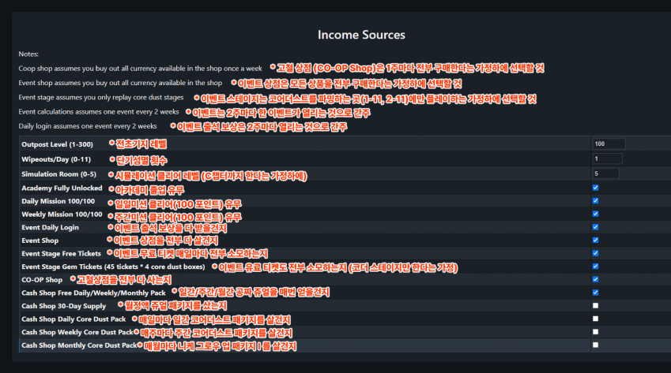
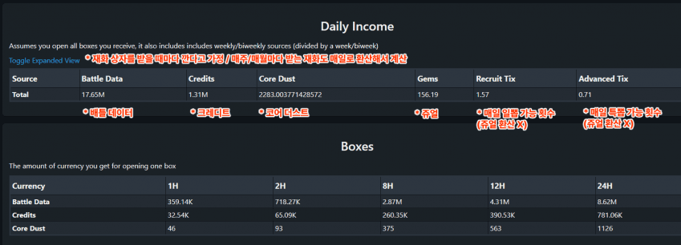

https://dotgg.gg/nikke/tools/income-calculator
설명

* 챌린지 스테이지는 계산 X
* 이벤트 출석 보상은 7일 동안 출석하면 받는 그거 말하는거인듯?
지금 여름 이벤트 말고 로산나, 누블랑 이벤트 생각하시면 될듯
* 과금은 쥬얼 월정액, 코더팩 기준으로만 계산
일일 부스트팩, 주간 그로우업, 월간 그로우업은 선택 범위에 X
근데 그거까지 살 정도면 씨발 이거 안봐도 되지 않을까요

그럼 이렇게 하루에 얼마나 재화를 벌 수 있는지 알 수 있습니다
참고로 1M = 1000K임
"이론상" 무과5금도 1주일에 한번씩 10뽑을 할 수 있습니다
이벤트 상품 포함 과금 효율표는 아래 링크를 참고하세요